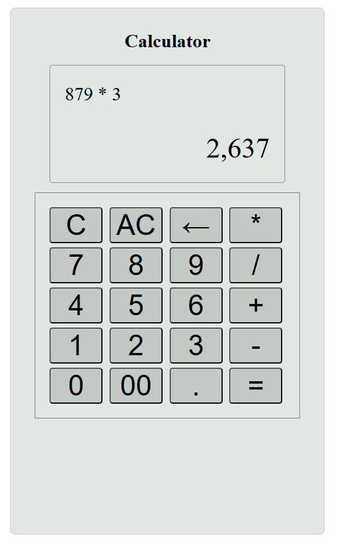
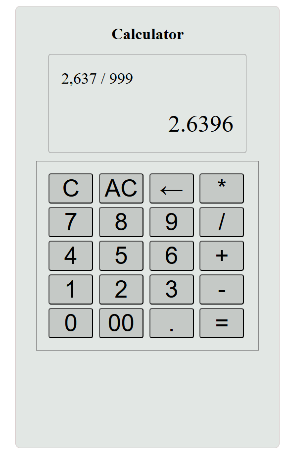

Calculator App


For this project I pretty much just wanted to get something on the projects page. I have minor experience in the past using React, and I wanted to write something in it to refamiliarize myself. I used the most basic CSS I could because I was focused on functionality and the various features. I need to take more pictures, or potentially record a video showing everything being operational. There are defintite improvements I could make, but I am more interested in starting other projects using C# and maybe more vanilla JavaScript to familiarize myself with the wide ecosystem that I heard about when I first decided I wanted to try JavaScript.